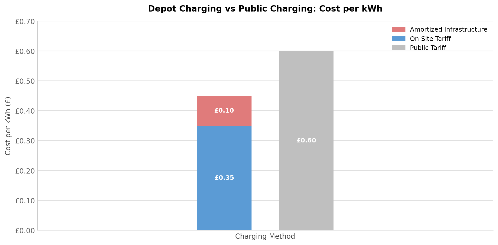

Dynamon Work
A showcase of analytics engineering projects delivered at Dynamon — covering data pipeline design, financial modelling, and performance optimisation.
Emissions Data Quality & Transformation Pipeline
Problem
Emissions modelling relied on multiple raw data sources with inconsistent formats and varying data quality. Key inputs such as UK government CO₂ emission factors are updated annually, requiring a reliable system to track changes over time. Some values were based on fixed assumptions with no consistent way to document when they were last reviewed or where they originated. The lack of clear data lineage and auditability reduced trust in model outputs and made it difficult to trace errors in downstream calculations.
Key Work
- Transformed fragmented reference data into a governed schema by modelling emission factors with explicit scopes, units, and in-row provenance (source, year, notes) within a versioned metadata table.
- Created a single source of truth, exposed via a read-only view representing the latest approved factor set, ensuring all downstream SQL outputs were fully traceable.
- Enforced data quality at write time using CHECK constraints, a partial unique index, and an active flag to guarantee only one valid version of each factor exists.
- Implemented append-only versioning using a BEFORE INSERT trigger to retire previously active records and maintain a complete audit history of changes.
- Prevented invalid or duplicate data from entering the system, improving reliability of downstream calculations and enabling efficient error tracing.
Impact
- Improved trust in emission calculation outputs for consultants and clients.
- Enabled faster error tracing by distinguishing between calculation errors and source data issues.
- Created a more reliable and scalable data foundation.
Total Cost of Ownership (TCO) Data Model
Problem
Clients required a comprehensive Total Cost of Ownership (TCO) analysis to assess the financial feasibility of transitioning from ICE vehicles to electric vehicles. This involved integrating multiple cost components — vehicle costs, charging infrastructure, and more — into a single model. The challenge was to design a scalable data model that could accommodate new cost factors without significant schema changes, while maintaining fast runtime performance for user-driven recalculations.
Key Work
- Translated complex business requirements into structured data transformations and model design.
- Designed an Entity Relationship Diagram (ERD) to model relationships between existing datasets and newly introduced cost input and output tables.
- Developed an incremental dbt model to aggregate TCO at the vehicle level and combine it with vehicle specification data for reporting.
- Designed the model to support extensibility, allowing new cost variables to be added with minimal changes.
- Built and deployed a Python-based calculation engine as an AWS Lambda function, reducing latency and improving responsiveness for user-driven calculations.
- Collaborated closely with stakeholders to refine requirements and present outputs in a format suitable for reporting and decision-making.
Impact
- Enabled stakeholders to make data-driven financial decisions when evaluating the transition from ICE to electric vehicles.
- Bridged the gap between technical data modelling and business insight by delivering clear, accessible outputs for non-technical users.
Example Visualisation
Total cost breakdown — Current (ICE) vs All EV Replacement scenario
| Metric | Current (ICE) | Replacement (EV) | Change |
|---|---|---|---|
| Total Cost | £6,896,293.03 | £8,823,426.51 | +28% |
| Total Vehicle Costs | £6,896,293.03 | £7,913,426.51 | +15% |
| CAPEX Vehicle Costs | £1,382,500.00 | £2,096,875.00 | +52% |
| OPEX Vehicle Costs | £5,513,793.03 | £5,816,551.51 | +5% |
| Total Location Costs | £0.00 | £910,000.00 | — |
| CAPEX Location Costs | £0.00 | £850,500.00 | — |
| OPEX Location Costs | £0.00 | £59,500.00 | — |
| CO₂ Emissions | 13,630.9t | 5,531.7t | −59% |

Figure: Charging cost per kWh — depot (on-site) charging vs public charging stations.
The chart above compares the cost-effectiveness of investing in depot charging infrastructure versus relying on public charging stations. The analysis is based on energy consumption data derived from vehicle telematics, ensuring the comparison reflects real-world usage patterns.
DBT Optimisation
Problem
Product merges were taking a significant amount of time due to full dbt refreshes on large tables with high data volumes. This process often had to be run after hours, consuming considerable developer time and slowing down delivery workflows.
Key Work
- Analysed dbt model performance using EXPLAIN ANALYSE to identify query bottlenecks.
- Optimised SQL logic by removing unnecessary window functions and simplifying transformations.
- Refactored CTEs to improve logical flow and reduce the volume of data processed during joins with large tables.
- Reduced data scanned by restructuring queries to filter earlier in the transformation process.
- Implemented indexing strategies on key dbt tables to improve query performance and join efficiency.
Impact
- Reduced dbt model runtime, enabling faster and more efficient product merges.
- Decreased manual developer effort required for after-hours processing.
- Improved overall performance and scalability of the data transformation layer.